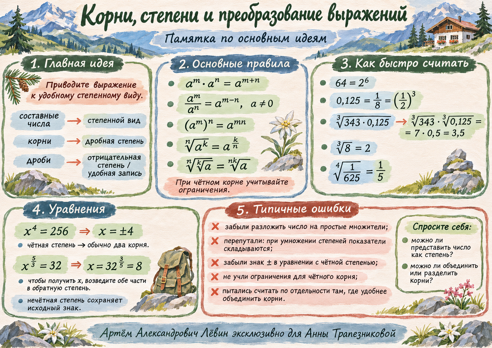

Степенная запись
64 = 26 · 243 = 35
729 = 36
Математика / 10 класс / 17 ноября 2026
От числового выражения до ответа: приводим числа к степенному виду, учитываем знак и область определения, объединяем корни, решаем уравнения с целыми и дробными показателями.
Стратегия
Заметили большое составное число, дробь или вложенный корень? Сначала представьте данные в удобном виде. Так свойства степеней становятся видны сразу.
Степенная запись
64 = 26 · 243 = 35
729 = 36
Дробь как степень
0,125 = 1/8 = (1/2)3
1/125 = 5−3
Составное число → степенной вид → правило → проверка результата.
Основные формулы
Произведение
При умножении степеней с одинаковым основанием показатели складываются.
24 · 25 = 29
Степень степени
При возведении степени в степень показатели перемножаются.
(24)5 = 220
Для неотрицательного основания корень и дробный показатель выражают одну операцию:
Условия. Для корня чётной степени подкоренное выражение должно быть неотрицательным. Обозначения со степенями подразумевают допустимые значения основания и показателей.
Знак и область определения
Арифметический корень чётной степени всегда неотрицателен. Корень нечётной степени сохраняет знак числа.
Чётный корень
Например, ⁴√((-3)4) = 3.
Нечётный корень
∛((-3)3) = −3.
Невозможно в действительных числах: ⁴√(−16). А вот ∛(−8) = −2.
Чётность степени
Чётная степень
Нечётная степень
Если дробь в показателе имеет нечётный знаменатель, выражение можно рассматривать для отрицательных значений переменной. При обратных преобразованиях важно контролировать число решений.
Осторожно: уравнение x2/3 = 4 имеет два решения: x = −8 и x = 8. Знак показателя и его чётность влияют на обратимость преобразования.
Проверить знак на числовой прямойПреобразования
Для корней чётной степени в произведении оба множителя должны быть неотрицательны; в частном знаменатель положителен. Для нечётного корня множители могут быть любого знака, а знаменатель отличен от нуля.
Разделяем корень произведения
Объединяем корни
Если a ≥ 0, показатели вложенных корней перемножаются:
Типичная ошибка: забыть модуль при извлечении корня чётной степени. Для суммы √(a+b) правило разделения корня на слагаемые в общем случае не действует.
Визуальная памятка

Самостоятельная работа · Путь А
Вычислите, решите уравнения или упростите выражения. Учитывайте ограничения и модуль. Затем откройте ответы ниже.
Самопроверка
Открывайте только после самостоятельного решения. Для задач с переменными особенно внимательно проверьте область определения.
5
8
1/5
−0,3
x = −6 или x = 6
x = −1/2
x = 243
10
|a|
3|x|